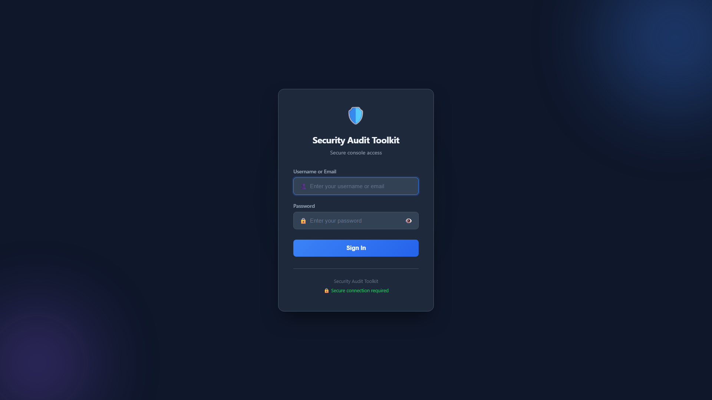
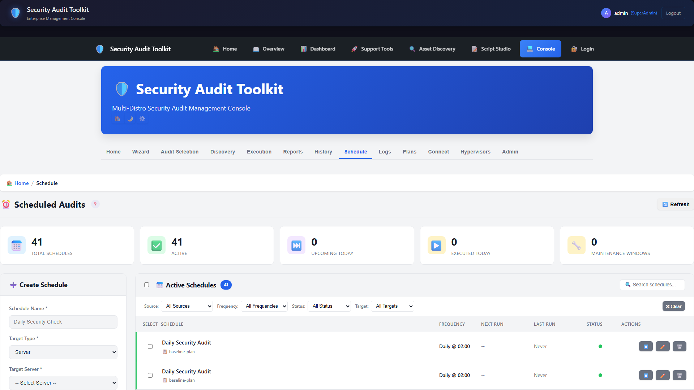
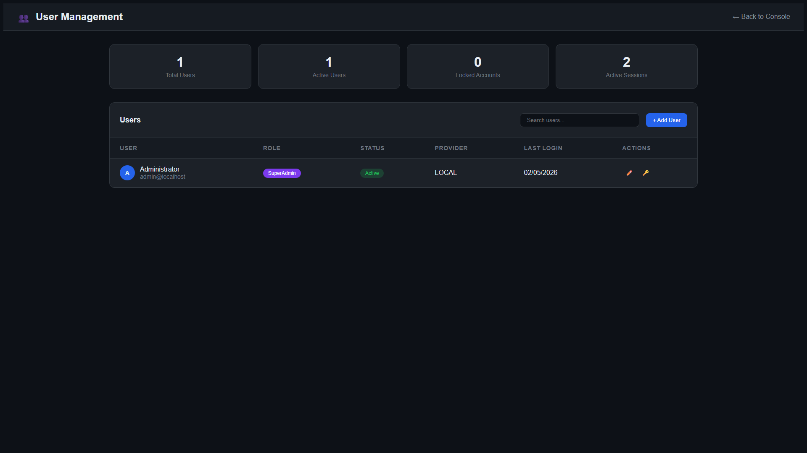
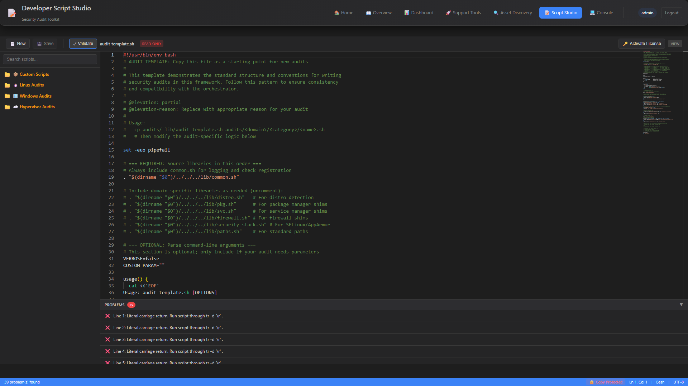
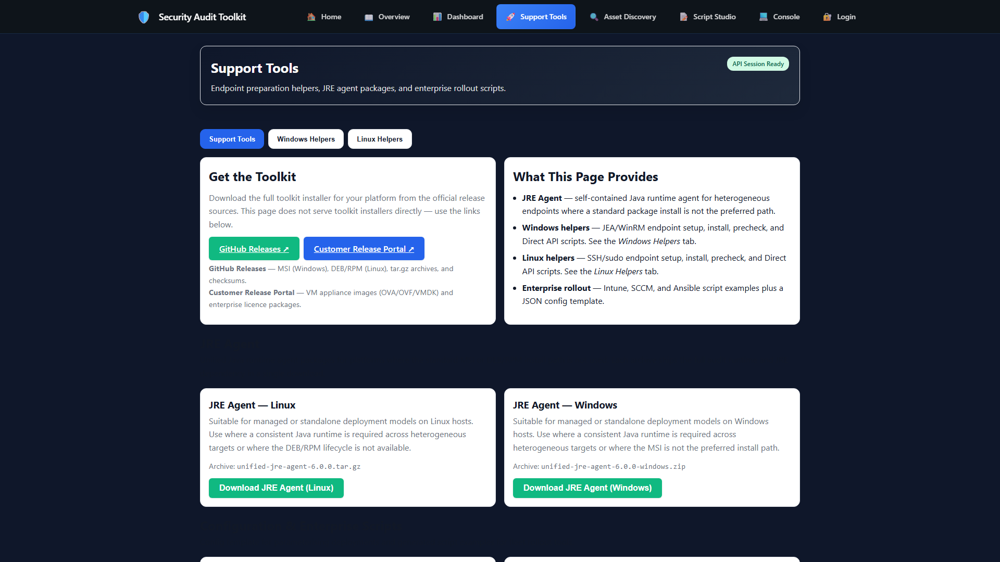
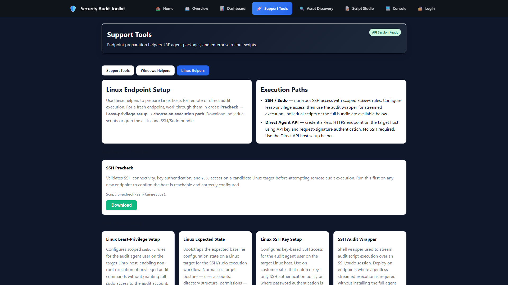

Screenshots
Product screenshots
Refreshed screenshots from the latest build and release stream.






Advanced Workflows
Scripting and helper tooling






Managed Agent
Standalone & managed agent views